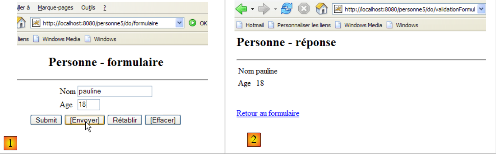
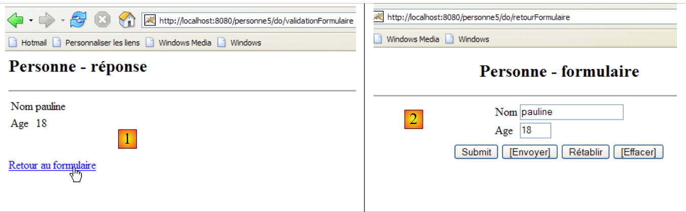

10. Webapplicatie MVC [personne] – versie 5
10.1. Introduction
In deze versie hebben we twee wijzigingen aangebracht:
De eerste betreft de manier waarop de client aan de server aangeeft welke actie hij wil uitvoeren. Tot nu toe werd dit aangegeven met behulp van een parameter genaamd [action] in het verzoek van de GET of de POST van de client. Hier wordt de actie gespecificeerd door het laatste element van de door de client opgevraagde URL, zoals te zien is in de volgende reeks:

In [1] is de URL waarnaar het formulier is verzonden [/personne5/do/validationFormulaire]. Het is het laatste element [validationFormulaire] van de URL dat de controller in staat stelde de uit te voeren actie te herkennen. In [2] is de POST, die werd geactiveerd door de link [Retour au formulaire], uitgevoerd op de URL [/personne5/do/retourFormulaire]. Ook hier geeft het laatste element [retourFormulaire] van de URL aan de controller aan welke actie moet worden uitgevoerd.
We voeren deze wijziging door omdat dit de methode is die wordt gebruikt door de meest gangbare webontwikkelingsframeworks, zoals Struts of Spring MVC.
Alle URL’s van de applicatie zullen de vorm [/personne5/do/action] hebben. Het bestand [web.xml] van de applicatie [/personne5] geeft aan dat deze applicatie URL’s in de vorm [/do/*] accepteert:
<servlet-mapping>
<servlet-name>personne</servlet-name>
<url-pattern>/do/*</url-pattern>
</servlet-mapping>
De controller haalt de naam van de uit te voeren actie als volgt op:
De methode [getPathInfo] van het object [request] levert het laatste element van de URL van het verzoek op.
De tweede wijziging betreft de manier waarop de invoer van de gebruiker tussen twee verzoek-antwoordcycli wordt opgeslagen. Momenteel wordt deze informatie in een sessie opgeslagen. Deze methode kan nadelen hebben als er veel gebruikers zijn en er voor elk van hen veel gegevens moeten worden opgeslagen. Elke gebruiker heeft namelijk zijn eigen sessie. Bovendien blijft deze sessie nog enige tijd actief nadat een gebruiker is vertrokken, tenzij er een optie is voorzien om uit te loggen. Zo nemen 1000 sessies van 1000 bytes 1 MB geheugen in beslag. Dit blijft een bescheiden vereiste en er zijn maar weinig applicaties die 1000 sessies tegelijkertijd actief hebben.
Toch bestaan er alternatieven voor de sessie die minder geheugen verbruiken, en het is goed om deze te kennen. We zullen hier de methode met cookies gebruiken. Laten we dit aan de hand van een voorbeeld illustreren.
Stap 1: de gebruiker verzendt een formulier:
 |
Deze vraag-antwoordcyclus leidt tot de volgende uitwisselingen HTTP tussen de client en de server:
[1] : [demande du client]
Dit is een klassieke POST. Er valt hier niets bijzonders te melden, behalve dat, hoewel we geen sessie gaan gebruiken, de webserver er toch een aanmaakt. Dit blijkt uit het sessietoken dat de browser in regel 11 naar de server terugstuurt en dat hij eerder van de server had ontvangen.
[2]: [réponse du serveur]
We zien dat in regel 3 en 4 de headers HTTP en [Set-Cookie] naar de clientbrowser zijn verzonden, één voor de naam (regel 3) en één voor de leeftijd (regel 4). De waarden van deze cookies zijn de waarden die in regel 14 van de hierboven genoemde POST en [1] zijn verzonden.
Stap 2: Terug naar het formulier

Deze vraag-antwoordcyclus leidt tot de volgende HTTP-uitwisselingen tussen de client en de server:
[1] : [demande du client]
Hier zien we de POST die wordt veroorzaakt door het klikken op de link [Retour au formulaire]. Op regel 11 zien we dat de browser de ontvangen cookies [nom, age, JSESSIONID] via de HTTP-header [Cookie] terugstuurt naar de server. Dit is het principe van cookies. De client stuurt de cookies die de server hem heeft gestuurd terug naar de server. In dit voorbeeld ontvangt de controller de waarden [pauline, 18], die hij moet plaatsen in de velden [txtNom, txtAge] van de weergave [formulaire] die wordt weergegeven in [2].
[2] : [réponse du serveur]
Er valt hier niets bijzonders te melden, behalve dat de server in dit antwoord geen cookies heeft verzonden. Dit zal de browser er niet van weerhouden om bij de volgende uitwisseling alle cookies die hij van de server heeft ontvangen terug te sturen, ook al heeft dat geen zin. We verminderen dus de druk op het beschikbare geheugen van de server ten koste van een toename van de tekenstroom in de uitwisselingen tussen client en server.
10.2. Het Eclipse-project
Om het Eclipse-project [mvc-personne-05] van de webapplicatie [/personne5] aan te maken, dupliceren we het project [mvc-personne-04] volgens de procedure die wordt beschreven in paragraaf 6.2.
 |  |
10.3. Configuratie van de webapplicatie [personne5]
Het bestand web.xml van de applicatie /personne5 ziet er als volgt uit:
<?xml version="1.0" encoding="UTF-8"?>
<web-app id="WebApp_ID" version="2.4"
xmlns="http://java.sun.com/xml/ns/j2ee"
xmlns:xsi="http://www.w3.org/2001/XMLSchema-instance"
xsi:schemaLocation="http://java.sun.com/xml/ns/j2ee http://java.sun.com/xml/ns/j2ee/web-app_2_4.xsd">
<display-name>mvc-personne-05</display-name>
<!-- ServletPersonne -->
<servlet>
<servlet-name>personne</servlet-name>
<servlet-class>
istia.st.servlets.personne.ServletPersonne
</servlet-class>
...
</servlet>
<!-- Toewijzing ServletPersonne-->
<servlet-mapping>
<servlet-name>personne</servlet-name>
<url-pattern>/do/*</url-pattern>
</servlet-mapping>
<!-- startpagina's -->
<welcome-file-list>
<welcome-file>index.jsp</welcome-file>
</welcome-file-list>
</web-app>
Dit bestand is identiek aan dat van de vorige versie, op enkele details na:
- regel 6: de weergavenaam van de webapplicatie is gewijzigd in [mvc-personne-05]
- regel 18: de URL's die door de applicatie worden verwerkt, hebben de vorm [/do/*]. Voorheen werd alleen de URL [/main] verwerkt. Nu zijn er evenveel URL's als er acties moeten worden verwerkt.
De startpagina [index.jsp] verandert:
<%@ page language="java" contentType="text/html; charset=ISO-8859-1"
pageEncoding="ISO-8859-1"%>
<%@ taglib uri="/WEB-INF/c.tld" prefix="c" %>
<c:redirect url="/do/formulaire"/>
- regel 5: de pagina [index.jsp] leidt de client om naar de URL [/personne5/do/formulaire], wat neerkomt op het verzoek aan de controller om de actie [formulaire] uit te voeren.
10.4. De code van de weergaven
De weergaven [formulaire, réponse, erreurs] veranderen nauwelijks. De enige wijziging is dat de uit te voeren actie niet meer op dezelfde manier wordt gespecificeerd als voorheen, toen deze werd gedefinieerd in een verborgen veld met de naam [action] in de verzonden formulieren. Nu wordt deze gedefinieerd in de doel-URL van de verzonden formulieren, c.a.d, in het attribuut [action] van de tag <form>:
[formulaire.jsp]:
...
<html>
<head>
<title>Personne - formulaire</title>
<script language="javascript">
...
</script>
</head>
<body>
<center>
<h2>Personne - formulaire</h2>
<hr>
<form name="frmPersonne" action="validationFormulaire" method="post">
...
</form>
</center>
</body>
</html>
- regel [13]: de parameter [action] van het formulier verschijnt weer, nadat deze in eerdere versies een tijdje was verdwenen. Om de waarde van dit attribuut hier te begrijpen, moet men bedenken dat alle door de applicatie verwerkte URL’s de vorm [/do/action] hebben. Regel [13]: het attribuut [action] heeft als waarde een relatieve URL (die niet begint met /). De browser zal deze dus aanvullen met de URL van de momenteel weergegeven pagina, wat noodzakelijkerwijs een URL in de vorm [/do/action] is. Het laatste element wordt vervangen door de relatieve URL van het attribuut [action] van de tag <form>, waardoor de URL [/do/validationFormulaire] als doel van POST ontstaat.
- het verborgen veld [action] is verdwenen
[réponse.jsp]:
...
<html>
...
<body>
...
<form name="frmPersonne" action="retourFormulaire" method="post">
</form>
<a href="javascript:document.frmPersonne.submit();">
${lienRetourFormulaire}
</a>
</body>
</html>
- regel [7]: het doel van POST wordt [/do/retourFormulaire]
- het verborgen veld [action] is verdwenen uit het formulier op de regels 7-8.
[erreurs.jsp]:
...
<html>
...
<body>
...
<form name="frmPersonne" action="retourFormulaire" method="post">
</form>
<a href="javascript:document.frmPersonne.submit();">
${lienRetourFormulaire}
</a>
</body>
</html>
- regel [6]: het doel van POST wordt [/do/retourFormulaire]
- het verborgen veld [action] is verdwenen uit het formulier op de regels 6-7.
De lezer wordt verzocht deze nieuwe weergaven te testen volgens het principe dat in eerdere versies is behandeld.
10.5. De controller [ServletPersonne]
De controller [ServletPersonne] van de webapplicatie [/personne5] zal de volgende acties verwerken:
nr. | verzoek | bron | verwerking |
1 | [GET /personne5/do/formulaire] | door de gebruiker ingevoerde url | - de lege weergave [formulaire] verzenden |
2 | [POST /persoon5/do/validationFormulaire] met parameters [txtNom, txtAge] geplaatst | klik op de knop [Envoyer] in de weergave [formulaire] | - controleer de waarden van de parameters [txtNom, txtAge] - als ze onjuist zijn, de weergave [erreurs(erreurs)] verzenden - als ze correct zijn, stuur dan de weergave [reponse(nom,age)] |
3 | [POST /persoon5/do/retourFormulaire] zonder verzonden parameters | klik op de link [Terug naar het formulier] in de weergaven [réponse] en [erreurs]. | - de weergave [formulaire], vooraf ingevuld met de laatst ingevoerde waarden, verzenden |
Het skelet van de controller [ServletPersonne] is identiek aan dat van de vorige versie. We nemen de wijzigingen door die zijn aangebracht in de methoden [doValidationFormulaire, doRetourFormulaire, doGet]; de methoden [init, doInit, doPost] zijn ongewijzigd gebleven.
10.5.1. De methode [doGet]
De methode [doGet] haalt de uit te voeren actie niet op dezelfde manier op als in eerdere versies:
- regel 12: de uit te voeren actie wordt opgehaald. Deze heeft de vorm [/action].
- regels 18-22: verwerking van de actie [/formulaire], aangevraagd door een verzoek GET
- regels 23-27: verwerking van de actie [/validationFormulaire], aangevraagd via een verzoek POST
- regels 28-32: verwerking van de actie [/retourFormulaire], aangevraagd door een verzoek POST
10.5.2. De methode [doValidationFormulaire]
Deze methode verwerkt verzoek nr. 2 [POST /personne5/do/validationFormulaire] samen met [txtNom, txtAge] in de verzonden elementen. De code ervan is als volgt:
Nieuwigheden:
- de methode [doValidationFormulaire] stuurt als antwoord een van de weergaven [réponse, erreurs]. Ongeacht wat dit antwoord is, plaatst de controller er twee cookies in, regels 8-9. Een cookie wordt weergegeven door een object [Cookie] waarvan de constructor twee parameters accepteert: de sleutel van de cookie en de waarde die daaraan is gekoppeld.
- regel 8: de ingevoerde waarde voor de naam wordt in een cookie met de sleutel „naam” geplaatst
- regel 9: de ingevoerde waarde voor de leeftijd wordt in een cookie met de sleutel "age" geplaatst
- Er wordt een cookie toegevoegd aan het antwoord HTTP dat met de methode [response.addCookie] aan de klant wordt teruggestuurd. Dit antwoord wordt hier alleen voorbereid. Het wordt pas daadwerkelijk verzonden wanneer de pagina JSP van de weergave die naar de klant is verzonden, wordt uitgevoerd.
10.5.3. De methode [doRetourFormulaire]
Deze methode verwerkt verzoek nr. 2 [POST /personne5/do/retourFormulaire] zonder verzonden gegevens. De code ervan is als volgt:
Nieuwe functies:
De methode [doRetourFormulaire] moet een vooraf ingevuld formulier weergeven met de laatst ingevoerde gegevens. In de vorige versie stonden deze in de sessie. In deze versie wordt de sessie niet meer gebruikt, maar worden cookies gebruikt om gegevens tussen twee client-server-uitwisselingen op te slaan. Toen de klant om validatie van het formulier vroeg, ontving hij als antwoord de weergave [réponse] of [erreurs], afhankelijk van het geval, vergezeld van twee cookies met de namen "naam" en "leeftijd". Wanneer op de link [Retour au formulaire] in deze twee weergaven wordt geklikt – wat een POST op de URL [/do/retourFormulaire] veroorzaakt – stuurt de browser de twee ontvangen cookies terug naar de server.
- regels 4-18: we halen de waarden op van de cookies met de namen "naam" en "leeftijd". Vreemd genoeg bestaat er geen methode om de waarde van een cookie op te halen aan de hand van de sleutel. Daarom moeten we elk ontvangen cookie afzonderlijk doorlopen.
- Zodra dit is gebeurd, worden de twee verkregen waarden in het model van de weergave [formulaire] geplaatst (regels 20-21), zodat deze ze kan weergeven.
10.6. Tests
Start Tomcat op of herstart het nadat je het Eclipse-project [personne-mvc-05] erin hebt geïntegreerd, en roep vervolgens de URL [http://localhost:8080/personne5] op.